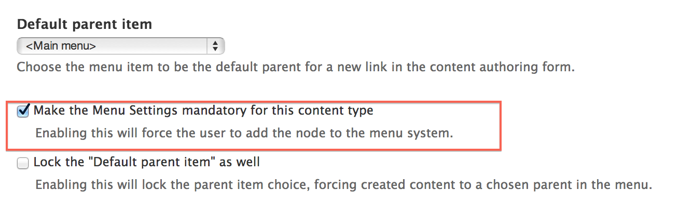
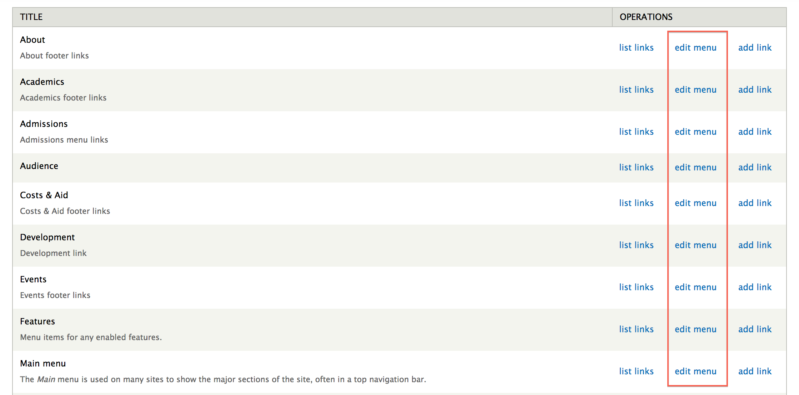

Menus are a collection of links (menu items) used to navigate a website. You can use the menu interface to control and customize the powerful menu system that comes with your website.
Menus are primarily displayed as a hierarchical list of links using the highly flexible blocks feature. Each menu automatically creates a block of the same name.
By default, new menu items are placed inside a built-in menu labeled Main menu, but administrators can also create custom menus and assign them to block regions on a page.
When adding or editing site content, you can also specify the content's menu item. You can specify a default menu for the content authoring form.
Each default or custom menu has a corresponding block. For more information on blocks, see Working with Blocks. Configuration
Structure > Menus > Add menu
When adding or editing site content, you can specify the content's menu item.
To change the default menu location when adding or editing site content, do the following:
Structure > Content types
This will automatically set the parent menu item for new content created.
By making the menu selection mandatory, it forces the user to select a menu parent location.

By locking the default parent menu item, you force the menu parent to default to the selected parent item. This is useful when you are positive that certain content should only be placed under a specific menu item.
Structure > Menus

Note: The default menus cannot be renamed.
Structure > Menus
Note: The default menus cannot be deleted.
Created on January 10, 2014
Last modified on January 13, 2014
Authored by Gray Sadler